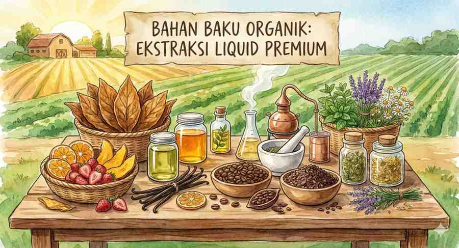

5 Manfaat Vaping Organik untuk Gaya Hidup Sehat

Menjelajahi revolusi vaping bersih dengan bahan-bahan organik untuk pengalaman yang lebih aman dan memuaskan.
Daftar Isi
Dalam beberapa tahun terakhir, tren gaya hidup sehat telah merambah ke berbagai aspek kehidupan, termasuk dunia vaping. Banyak pengguna kini mulai beralih dari liquid konvensional ke opsi yang lebih bersih, yaitu vaping organik. Tapi, apa sebenarnya yang dimaksud dengan vaping organik dan mengapa hal ini menjadi sangat penting bagi para antusias wellness? Artikel ini akan membahas secara mendalam manfaat utama dari memilih produk vaping organik, khususnya dari lini produk premium VapeGrape yang diproduksi di Inggris.
Sejarah vaping sendiri dimulai sebagai alternatif untuk merokok tradisional, namun seiring berjalannya waktu, konsumen menjadi lebih kritis terhadap apa yang mereka hirup. Fenomena "clean vaping" muncul sebagai jawaban atas kekhawatiran terhadap bahan kimia sintetis yang sering ditemukan dalam liquid murah. Produk organik membawa standar ini ke level yang lebih tinggi dengan memastikan seluruh rantai pasok, mulai dari benih tanaman hingga proses botolling, mengikuti protokol kesehatan yang ketat.
1. Bebas dari Bahan Kimia Berbahaya dan Residu Pestisida
Perbedaan utama antara liquid organik dan konvensional terletak pada proses produksinya. Liquid vaping organik diproduksi menggunakan Vegetable Glycerin (VG) yang bersumber dari tanaman organik tanpa pestisida. Sebagian besar masyarakat tidak menyadari bahwa tanaman kedelai atau kelapa sawit yang digunakan sebagai bahan dasar VG konvensional seringkali disemprot dengan pestisida kimia yang kuat.
Saat bahan dasar ini diproses menjadi liquid, residu pestisida tersebut—meskipun dalam jumlah kecil—tetap berpotensi masuk ke dalam sistem tubuh melalui penguapan. Vaping organik mengeliminasi risiko ini sepenuhnya. Selain itu, nikotin dan perasa dalam liquid organik diekstraksi menggunakan metode yang tidak melibatkan pelarut hidrokarbon seperti butana atau heksana, yang dapat meninggalkan residu beracun.
Pilihan untuk beralih ke organik bukan hanya soal tren gaya hidup, melainkan investasi jangka panjang untuk sistem pernapasan dan integritas seluler kita.
Gaya hidup organik di VapeGrape bukan sekadar label. Banyak liquid vapes murah di pasaran mengandung diacetyl, acetoin, atau acetyl propionyl untuk memberikan sensasi rasa gurih yang menipu, namun bahan-bahan ini telah dikaitkan dengan kondisi medis serius seperti "popcorn lung". Produk organik kami menjamin ketiadaan bahan-bahan berbahaya ini melalui pengujian laboratorium independen yang melibatkan analisis kromatografi gas.
2. Profil Rasa yang Lebih Alami, Bersih, dan Kompleks
Jika Anda pernah merasa tenggorokan "gatal" (throat hit yang kasar) atau merasakan rasa yang terlalu buatan seperti permen karet kimia saat melakukan vaping, itu mungkin karena penggunaan perasa sintetis buatan laboratorium. Liquid organik menggunakan ekstrak asli dari buah-buahan, bunga, atau tanaman yang tumbuh secara alami.
Hasilnya adalah profil rasa yang jauh lebih halus, kompleks, dan tidak meninggalkan lapisan lengket (aftertaste) di mulut. Di VapeGrape, kami menggunakan teknologi ekstraksi CO2 superkritis. Metode ini menggunakan karbon dioksida pada tekanan sangat tinggi untuk menarik profil rasa yang kaya dari buah anggur pilihan dan tanaman CBD tanpa merusak molekul alaminya.
Dengan teknik ini, senyawa-senyawa aromatik yang sensitif terhadap panas tetap terjaga, memberikan sensasi vaping yang paling mendekati rasa aslinya di alam. Anda tidak hanya merasakan "rasa anggur", tetapi Anda merasakan esensi dari buah anggur yang segar, lengkap dengan nuansa keasaman dan kemanisannya yang seimbang.
Gambar 2: Ilustrasi bahan baku organik yang digunakan dalam proses ekstraksi liquid premium di fasilitas UK.
3. Lebih Ramah Lingkungan dan Mendukung Etika Berkelanjutan
Memilih produk organik juga berarti mendukung praktik pertanian regeneratif yang berkelanjutan. Petani organik yang bekerja sama dengan VapeGrape tidak menggunakan pupuk sintetis yang dapat merusak struktur tanah dan mencemari sumber air bawah tanah di sekitar perkebunan. Mereka menggunakan metode alami seperti rotasi tanaman dan pupuk kompos untuk menjaga kesuburan tanah.
Dengan memilih produk kami, Anda secara tidak langsung berkontribusi pada pelestarian ekosistem global. Selain itu, limbah dari proses ekstraksi organik jauh lebih aman bagi lingkungan dibandingkan limbah ekstraksi kimiawi yang membutuhkan pengolahan limbah B3 (Bahan Berbahaya dan Beracun) yang kompleks.
Tanggung jawab lingkungan ini meluas hingga ke kemasan kami. Kami berupaya menggunakan botol kaca yang dapat didaur ulang atau plastik yang bersertifikat BPA-free, memastikan bahwa produk kami tidak hanya baik untuk Anda, tetapi juga baik untuk bumi. Ini adalah komitmen jangka panjang VapeGrape terhadap filosofi "Wellness for You and the Planet".
Penawaran Spesial Vaping Bersih!
Ingin merasakan perbedaan nyata dari liquid organik premium? Konsultasikan preferensi rasa Anda dengan tim ahli kami dan dapatkan diskon eksklusif 20% untuk paket bundle perdana Anda.
Chat WhatsApp Sekarang4. Sertifikasi Ketat dan Transparansi Kontrol Kualitas
Mendapatkan label "organik" di industri vaping bukanlah hal mudah. Sangat sedikit produsen yang bersedia melewati audit tahunan yang melelahkan. Di VapeGrape, setiap batch produksi liquid harus melalui rangkaian tes meliputi kadar kemurnian nikotin, ketiadaan logam berat (seperti timbal dan arsenik), serta validasi profil kanabinoid yang stabil untuk produk CBD kami.
Kami meyakini bahwa transparansi bukan pilihan, melainkan kewajiban. Pengguna dapat melacak Sertifikat Analisis (Certificate of Analysis / COA) untuk setiap batch produk melalui barcode pada kemasan. Laporan ini diterbitkan oleh laboratorium pihak ketiga di Inggris, yang memiliki standar regulasi paling ketat di dunia untuk produk elektronik nikotin (TRPR).
Inilah yang membedakan produk profesional dengan liquid rumahan (home-brew) yang mungkin rasanya enak di awal, tetapi tidak memiliki konsistensi keamanan jangka panjang. Membeli VapeGrape berarti membeli ketenangan pikiran bahwa apa yang Anda hirup telah diverifikasi oleh para ilmuwan.
5. Dampak Positif pada Kesehatan dan Kesejahteraan Jangka Panjang
Meskipun vaping secara umum dianggap 95% lebih aman daripada merokok tembakau menurut Public Health England, "kualitas" tetap menjadi variabel yang menentukan. Mengurangi paparan bahan kimia harian dapat menurunkan risiko inflamasi pada saluran pernapasan bagian atas dan bawah.
Banyak pengguna yang beralih ke produk organik melaporkan perbaikan yang signifikan dalam beberapa aspek kesehatan mereka. Beberapa di antaranya meliputi pengurangan rasa sesak, penurunan frekuensi batuk pagi, dan yang paling mencolok adalah perbaikan kualitas tidur, terutama bagi mereka yang menggunakan formulasi CBD organik VapeGrape sebagai bagian dari ritual malam mereka.
Vaping organik memberikan cara bagi Anda untuk menikmati ritual ini tanpa beban mental terkait racun yang masuk ke tubuh. Ini adalah solusi modern bagi individu yang peduli dengan kebugaran fisik, performa mental, dan kebersihan gaya hidup secara menyeluruh.
Langkah-langkah Memulai Vaping Organik
Jika Anda baru mengenal dunia vaping organik, ada beberapa langkah yang kami sarankan untuk mendapatkan pengalaman optimal:
- Cek Label: Pastikan ada keterangan "Organic VG" atau "Natural Flavorings" pada botol.
- Gunakan Device yang Bersih: Untuk merasakan profil rasa organik yang asli, pastikan coil Anda masih baru. Sisa liquid konvensional dapat merusak kemurnian rasa organik.
- Mulai dengan Kadar Nikotin Rendah: Liquid organik cenderung memiliki penyerapan yang lebih efisien karena molekulnya yang alami.
- Pilih Distributor Resmi: Pastikan Anda membeli produk asli dari toko atau situs resmi VapeGrape untuk menjamin keaslian bahan.
Kesimpulan dan Penutup
Beralih ke vaping organik adalah salah satu keputusan terbaik yang dapat Anda buat sebagai pengguna vape dewasa. Manfaatnya jauh melampaui sekadar rasa yang enak; ini adalah tentang menjaga kesehatan paru-paru, mendukung petani yang ramah lingkungan, dan memastikan transparansi produk yang Anda konsumsi setiap hari.
Dunia wellness terus berkembang, dan vaping organik berada di garda terdepan dari evolusi tersebut. Dengan inovasi tanpa henti dari VapeGrape, kami berkomitmen untuk terus menyediakan produk yang tidak hanya memuaskan keinginan Anda, tetapi juga mendukung perjalanan kesehatan Anda. Jangan kompromi dengan kualitas, karena paru-paru Anda tidak memiliki cadangan.
Pertanyaan Sering Diajukan (FAQ)
Q: Apakah liquid organik lebih mahal daripada liquid biasa?
A: Ya, umumnya sedikit lebih mahal. Hal ini dikarenakan biaya bahan baku organik bersertifikat dan proses ekstraksi CO2 yang memerlukan peralatan teknologi tinggi. Namun, jika dibandingkan dengan biaya kesehatan jangka panjang, ini adalah investasi yang sangat ekonomis.
Q: Apakah liquid ini cocok untuk semua jenis pod/mod?
A: Produk VapeGrape dirancang dengan viskositas yang seimbang (biasanya 50/50 atau 70/30 VG/PG) sehingga ramah untuk koil pod system maupun mod berdaya tinggi. Ia tidak meninggalkan kerak (carbon build-up) sebanyak liquid sintetis yang mengandung pemanis buatan berlebih.
Q: Berapa lama daya simpan liquid organik?
A: Karena tidak menggunakan pengawet sintetis yang kuat, kami menyarankan penggunaan dalam waktu 6-12 bulan setelah botol dibuka. Simpan di tempat sejuk dan terhindar dari cahaya matahari langsung untuk menjaga stabilitas molekul organiknya.

Dr. Vaper (Health Consultant)
Seorang ahli bioteknologi tanaman dan antusias wellness yang telah mendedikasikan lebih dari satu dekade untuk meneliti profil toksikologi dan alternatif nikotin yang lebih bersih. Ia rutin menjadi pembicara di seminar kesehatan global mengenai pengurangan bahaya tembakau.
Artikel Terkait Lainnya

Cara Memilih Liquid Kualitas Tinggi yang Tepat
Pelajari parameter kritis dalam menentukan kualitas liquid sebelum Anda membelinya...
Baca Selengkapnya
Panduan Perawatan Vape Agar Awet Bertahun-tahun
Tips merawat device kesayangan Anda agar tetap memberikan rasa yang prima setiap saat...
Baca Selengkapnya